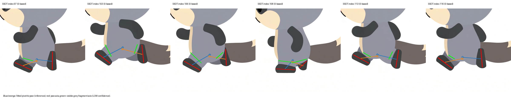
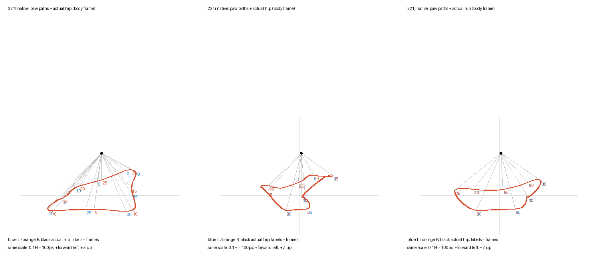

2026-10-02。「動画は股関節を支点にした振り子に近い。今の足はロボットのよう」というご指摘への試作です。処理はすべて Windows 機で行っています。
SSOT は、股関節から足先までの長さがほぼ一定のまま（ばらつき約 7%）、脚が振り子のように振れていました。足先の向きも脚の振りと一緒に回っています。今までの版（221f・221i）は、足先を「前後・高さ」で直接動かしていたため、脚がピストンのように伸び縮みしていました（ばらつき 26〜31%、すれ違い時は長さが約 1/3）。

（SSOT の解析。青・橙の線＝推定した支点から足先、赤＝足の向き）
下の図は体を基準にした足先の通り道（黒丸＝股関節）。221j は振り出し側が股関節を中心にした弧になりました。ただし接地中は足が床に沿って平らに動くため、その間は脚の長さが変わります。

1/4 速度：